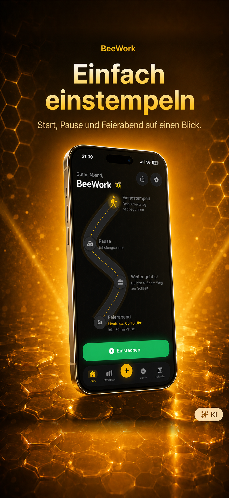
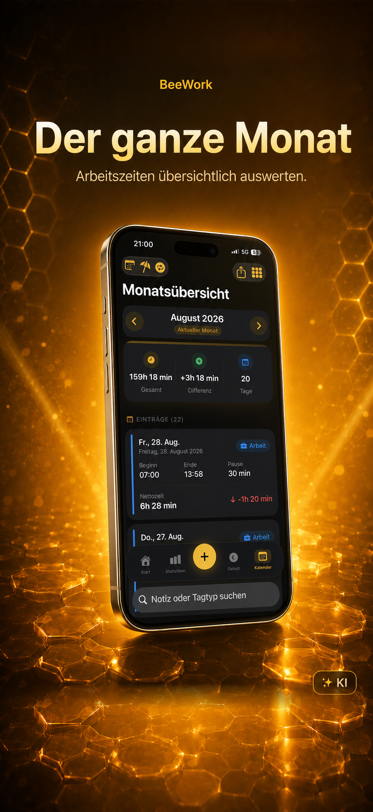
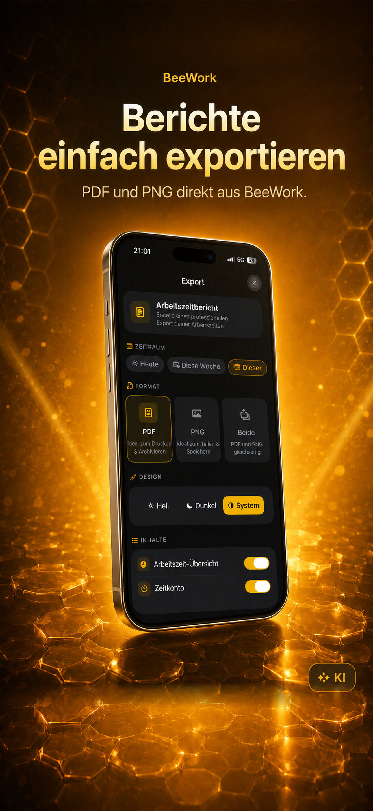
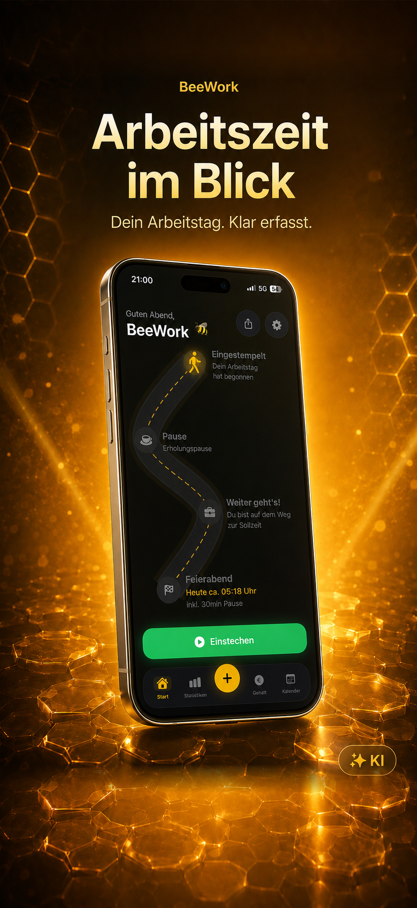
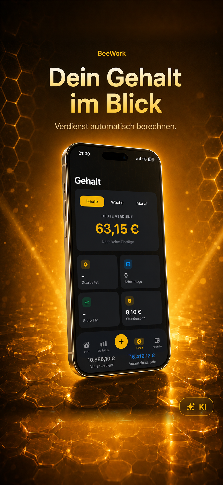
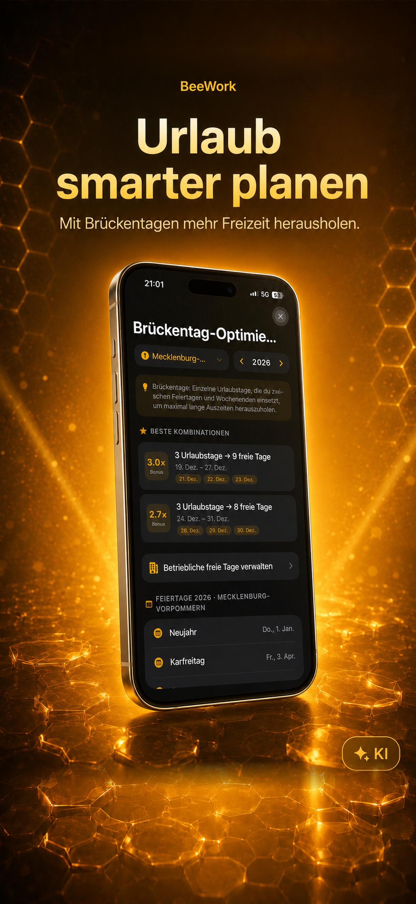
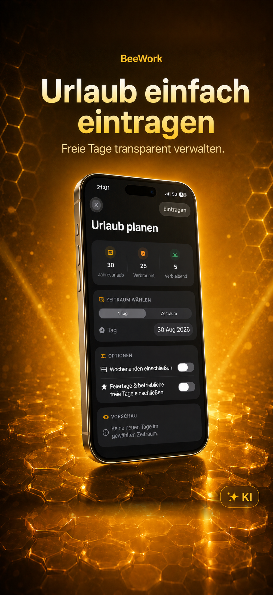
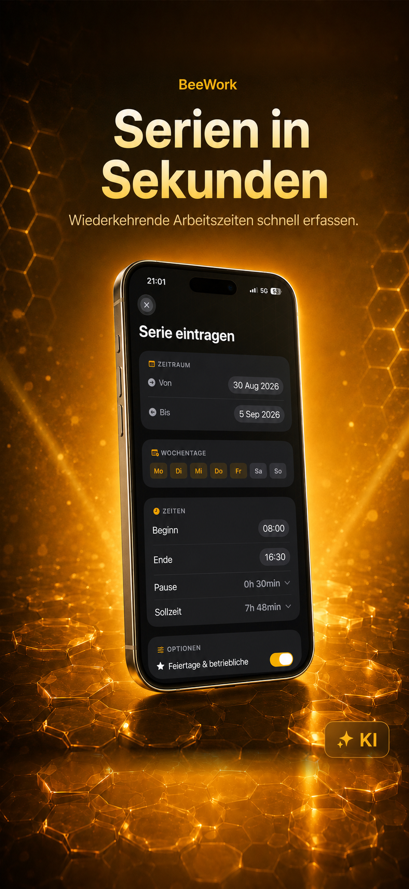
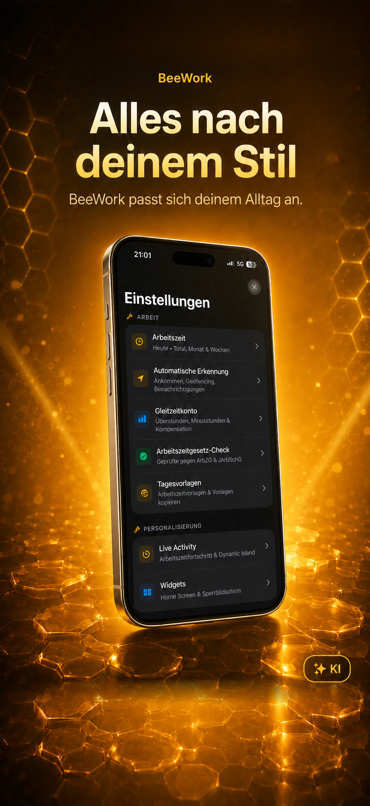
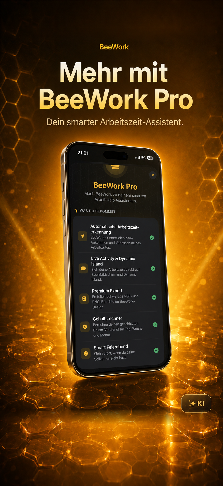

01 / Arbeitszeit erfassen
Ein Moment. Der Tag beginnt.
Einstempeln, loslegen. Mehrere Arbeitsblöcke und Aktivitäten bleiben in einem gemeinsamen Tagesverlauf.
◈BeeWork
Dein Arbeitstag
07:24Arbeitszeit
08:00Sollzeit16:30Feierabend
Eingestempelt●
BeeWork
Vom ersten Einstempeln bis zum Feierabend: Arbeitszeit, Gleitzeit und Planung in einer nativen App für das Apple-Ökosystem.
Verfügbarkeit ansehen ↗Dein Arbeitstag
Entwickelt für deinen Alltag.
Ein Arbeitstag. Alles im Gleichgewicht.
Dein Arbeitstag
Zeit zum Durchatmen
Dein Zeitkonto
Stunden im Plus
Monatsübersicht
Auch am Handgelenk
01 / Arbeitszeit erfassen
Einstempeln, loslegen. Mehrere Arbeitsblöcke und Aktivitäten bleiben in einem gemeinsamen Tagesverlauf.
Dein Arbeitstag
02 / Pausen berücksichtigen
Arbeit und Erholung gehören zusammen. Pausen fließen in deine erfasste Zeit und die Berechnung des Feierabends ein.
Zeit zum Durchatmen
03 / Gleitzeit verstehen
Sollzeit, Ist-Zeit und Gleitzeitsaldo auf einen Blick. So verstehst du deinen Tag, deine Woche und deinen Monat.
Dein Zeitkonto
Stunden im Plus
04 / Monat auswerten
Aus einzelnen Arbeitstagen wird ein verständlicher Verlauf. Monatsübersicht, Statistiken und Berichte machen deine Zeit nachvollziehbar.
Monatsübersicht
05 / Immer griffbereit
Widgets, Live Activities und Dynamic Island bringen deinen laufenden Arbeitstag direkt auf den Bildschirm.
06 / Apple Watch
Die Apple-Watch-App ergänzt iPhone und iPad. Dein Status bleibt auch dann erreichbar, wenn das Telefon in der Tasche steckt.
Auch am Handgelenk
Die vorhandenen Produktansichten im Detail.



BeeWork
Arbeitszeit & Produktivität
BeeWork App

Über das Projekt
BeeWork bündelt Zeiterfassung, Zeitkonto und die Planung des Arbeitstags. Die App ist für iPhone und iPad ausgelegt und wird durch eine Apple-Watch-App ergänzt.
Arbeitsblöcke, Pausen und Gleitzeit verändern laufend den Überblick über den Tag. Die entscheidende Frage bleibt: Wie viel habe ich gearbeitet – und wann ist Feierabend?
Ein gemeinsamer Ablauf verbindet Ein- und Ausstempeln mit Sollzeit und Saldo. Smart-Feierabend berechnet die voraussichtliche Endzeit; Widgets und Live Activities machen den Status ohne Umwege sichtbar.
Das Produkt führt Zeiterfassung, Urlaubsplanung, Berichte und Apple-Integration zusammen. Der öffentliche App-Store-Link folgt mit der Veröffentlichung.

Sollzeit, Zeitkonto und dein voraussichtlicher Feierabend in einem klaren Ablauf.
BeeWork bündelt den Arbeitstag in einem ruhigen, verständlichen Ablauf.
Sekundengenau ein- und ausstempeln – mit mehreren Arbeitsblöcken und Aktivitäten pro Tag.
Sollzeit, Ist-Zeit und Saldo bleiben für Tag, Woche und Monat sofort sichtbar.
Sieh, wann deine tägliche Sollarbeitszeit erreicht ist – inklusive Gleitzeit.
Arbeitsorte per Karte festlegen und beim Ankommen oder Gehen intelligent erinnert werden.
Widgets, Live Activities und Dynamic Island zeigen den laufenden Arbeitstag genau dort, wo du ihn brauchst.
Dein Status bleibt synchron – und Ein- oder Ausstempeln funktioniert auch per Kurzbefehlen.
Einblicke in Arbeitszeit, Gehalt, Urlaubsplanung und die weiteren Werkzeuge der App.






Die wichtigsten Werkzeuge bleiben genau dort, wo sie im Alltag helfen.
Mehr Automatisierung, tiefere Auswertungen und unbegrenzte Historie.
Im App Store
Flexibel abonnieren.
Im App Store
Für den langfristigen Überblick.
Im App Store
Einmaliger Kauf, sofern verfügbar.
Aktuelle Preise und verfügbare Optionen werden direkt im App Store angezeigt.
Der App-Store-Link wird ergänzt, sobald BeeWork verfügbar ist.
Deine Daten bleiben lokal auf deinem Gerät oder werden über iCloud synchronisiert.
Kurze Antworten zu BeeWork.
BeeWork ist für iPhone und iPad ausgelegt und besitzt zusätzlich eine Apple-Watch-App. Eine eigenständige macOS-App gibt es nicht.
BeeWork berechnet aus Sollzeit, erfasster Zeit, Pausen und auf Wunsch dem Gleitzeit- oder Wochensaldo einen voraussichtlichen Feierabend.
Ja. Pausen fließen in die Berechnung ein; BeeWork berücksichtigt dabei auch die Regeln des deutschen Arbeitszeitgesetzes.
Ja. Über Core Location und Geofencing kann BeeWork an das Einstempeln erinnern oder nach einer Bestätigung die Zeiterfassung starten.
BeeWork unterstützt Deutsch und Englisch. Die Sprache kann direkt in der App gewechselt werden.
Weiter entdecken